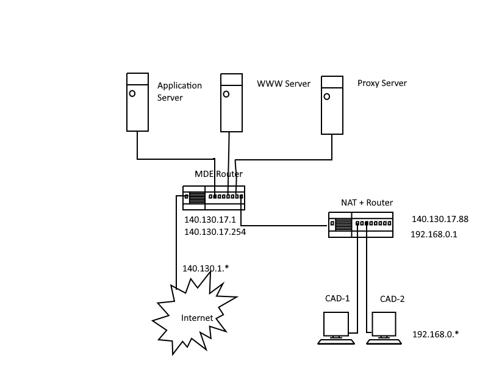
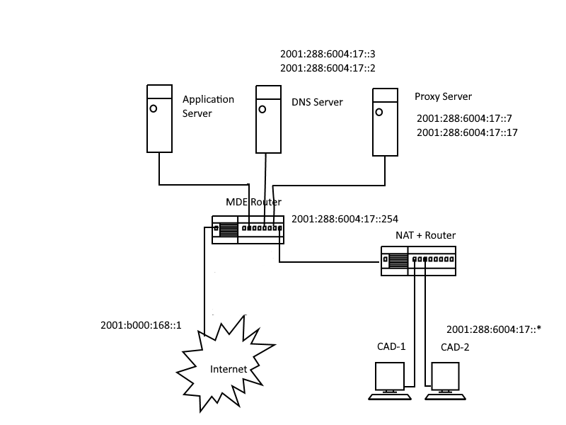

課程筆記 <<
Previous Next >> Task1
Tasks
電腦輔助設計室 ipv4 網路架構 (內部 ip 應該為 192.168.1.x)

電腦輔助設計室 ipv6 網路架構

Task1:
了解計算機程式課程如何進行, 如何評分
了解電腦輔助設計室電腦硬體與網路環境
了解如何下載使用學校所提供的教育版 Windows 10 與 MS Office 2016
了解如何建立 USB 上的可攜程式環境
了解如何建立 Github 帳號, 如何建立 cp2019 網站
Task2:(佔學期成績 10%)
利用 Dartpad 執行亂數分組
了解如何將數據檔案送到個人網站中
了解如何在 Dartpad 讀取各公開 URL 數據資料
了解如何將所讀取的資料轉為數列
了解如何隨機弄亂數列內容
了解如何使用 for 重複迴圈
了解如何依序取出數列中的資料
了解如何依序在數列中放入資料
分組作業: 請討論如何讓亂數分組程式更加完善, 無需人為插手進行分組.
Task3: (佔學期成績 10%)
利用 Dartpad 與 Html5 Canvas 執行靜態繪圖
了解如何繪製中華民國國旗
分組作業: 請討論如何完成美國國旗繪製
Task4: (佔學期成績 20%)
利用 Dartpad 與 Html5 Canvas 執行動態繪圖
了解如何製作貪食蛇遊戲
了解如何製作乒乓球遊戲
分組作業: 請將上述所有 Dartpad 上的程式轉為單一 Html 網頁程式, 並上傳到各分組網站中
Project: (佔學期成績 30%)
請根據
Practical Flutter (2019)
https://link.springer.com/book/10.1007/978-1-4842-4972-7
中的範例說明, 完成各組期末專案.
期末分組專案: 請根據上述 Task1 ~ Task4 的內容做為參考, 討論如何完成一個能夠在網頁與手機上執行的期末專案.
課程筆記 <<
Previous Next >> Task1